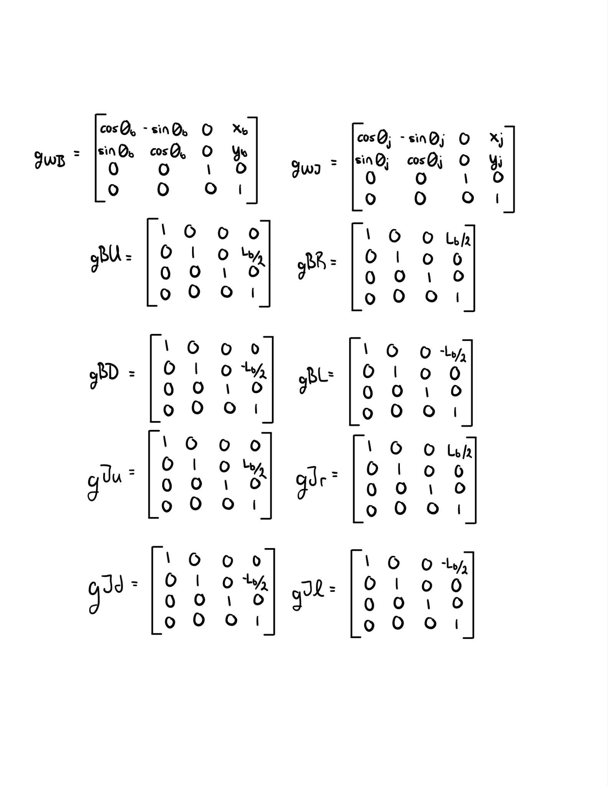
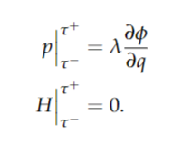
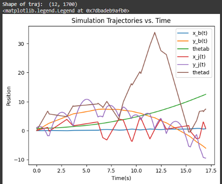

Dynamics Simulation: Dice in a Box
A constrained, planar rigid-body simulation of a dice impacting the interior of a rotating box, derived from first principles using the Euler-Lagrange equations, sixteen impact constraints, and a corresponding impact-update law, then numerically integrated and animated in Python.
Status: Completed · Spring 2024 (ME314)
View Repository on GitHubOverview
For the ME 314 final project, I completed the course's "default" project: a planar dynamic simulation of two rigid bodies, a square box and a jack, which I modeled as a dice, interacting through contact. The system is described by six generalized coordinates, corresponding to the planar pose of the box and the planar pose of the dice. The objective was to derive the complete nonlinear equations of motion analytically, with SymPy performing the algebra, to encode the contact constraints between the corners of the dice and the walls of the box, to derive an impact law governing the moments at which those constraints become active, and finally to simulate and animate the resulting dynamics.
System diagram, including the world frame {W}, the box frame {B}, the dice frame {J}, and the four box-wall and dice-corner frames used to construct the contact constraints. \(q = [x_b,\ y_b,\ \theta_b,\ x_j,\ y_j,\ \theta_j]\).
Challenge
The dice presented the central difficulty of the project. Unlike the box, which was governed solely by the Euler-Lagrange equations, the four corners of the dice were required to remain outside the four walls of the box at all times, and each of the sixteen corner-to-wall pairings required its own constraint. Whenever a constraint was violated, the system required a physically consistent impact update, one that conserved the appropriate quantities and altered the velocities of only the bodies involved in that particular collision. Formulating the impact law correctly, and ensuring that SymPy could solve sixteen coupled symbolic impact equations without becoming computationally intractable, proved to be the most demanding aspect of the project.

The complete set of homogeneous transformations from the world frame to the box and dice center-of-mass frames, and from those frames to each wall and corner frame, forming the basis for every constraint and kinetic-energy term derived subsequently.
Approach
The derivation was constructed symbolically in SymPy. A small set of helper functions, a planar SE(2)/SE(3) constructor, hat and unhat operators, and a homogeneous-transform inverse, performed the underlying computation for every frame transformation used thereafter. The body velocity of the dice and of each box wall was computed as \(g^{-1}\dot{g}\), converted into a 6x1 vector via the unhat operator, and combined into the kinetic energy \(\tfrac{1}{2}v^{T} I v\) and potential energy \(mgh\) expressions prior to differentiating the Lagrangian to obtain the equations of motion.
Because the system had no built-in collision handling, the four corners of the dice had to be expressed in the frame of each of the box's four walls, yielding sixteen scalar constraint functions \(\phi\), corresponding to the y-distance from each corner to the top and bottom walls and the x-distance to the left and right walls. The Jacobian of these constraints with respect to q was then used directly in the impact law.
The impact law follows the standard momentum-jump and energy-conservation formulation, \(p\big|_{\tau^-}^{\tau^+} = \lambda \dfrac{\partial \phi}{\partial q}\) and \(H\big|_{\tau^-}^{\tau^+} = 0\). This was implemented using dummy "minus" and "plus" symbols for each coordinate and its corresponding velocity, from which the sixteen symbolic impact equations were constructed and solved for whichever constraint was active at a given timestep.

The impact-update expression, referenced from Dynamics: From Calculus and Geometry of Motion, from which each of the sixteen constraint-specific impact equations was derived.
An RK4 integrator was used to advance the system, checking the impact condition at every timestep and substituting the updated post-impact velocities whenever a constraint value crossed its threshold. The resulting trajectory was then rendered using a Plotly-based animation.
Result
Two external inputs were applied to the simulation: a slow, constant upward force on the box, sufficient to keep it within frame and to ensure sustained contact with the dice, and a constant torque that increased the box's rotational speed over time, producing repeated impacts. Over a seventeen-second, 1,700-step simulation, the dice and box exchanged momentum at every collision as expected. The dice, being substantially lighter, absorbed a greater proportion of each impact and rotated markedly faster, while the box exhibited only a slight recoil owing to its larger mass. Position, velocity, and the impact-triggered discontinuities in velocity all corresponded correctly to the specified initial conditions, and the resulting animation contained no artifacts.

Trajectories of all six generalized coordinates. The sharp discontinuities in \(\theta_j\) and the irregular \(x_j\)/\(y_j\) paths correspond to the dice's velocity jumps at each of its sixteen possible impact events; the smoother \(x_b\)/\(y_b\)/\(\theta_b\) curves reflect the box's substantially larger inertia absorbing the same impacts.
Video Demo
Video of Impact Dynamics Simulation
Code
The complete SymPy derivation, simulation, and animation code is available in the linked GitHub repository above.